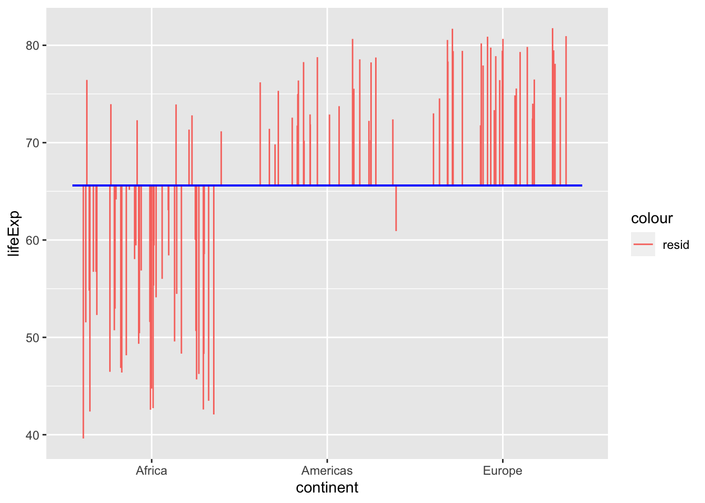
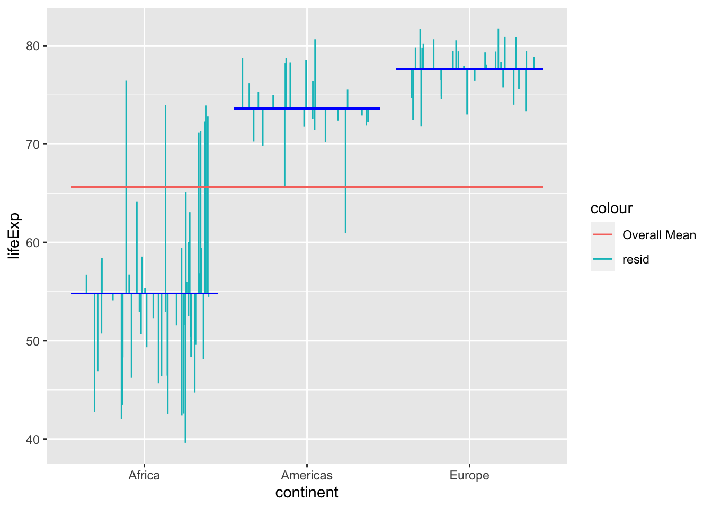
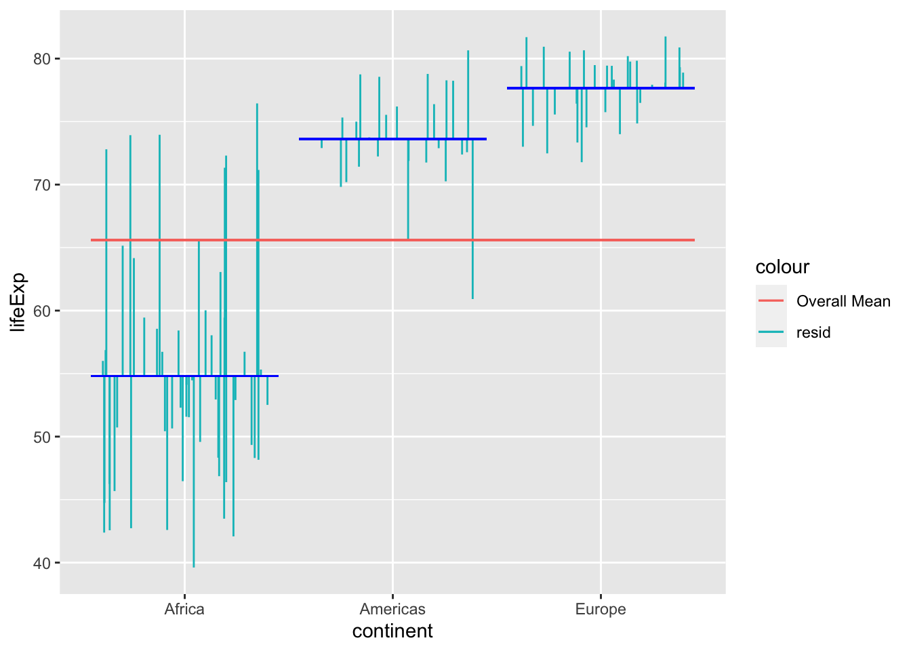
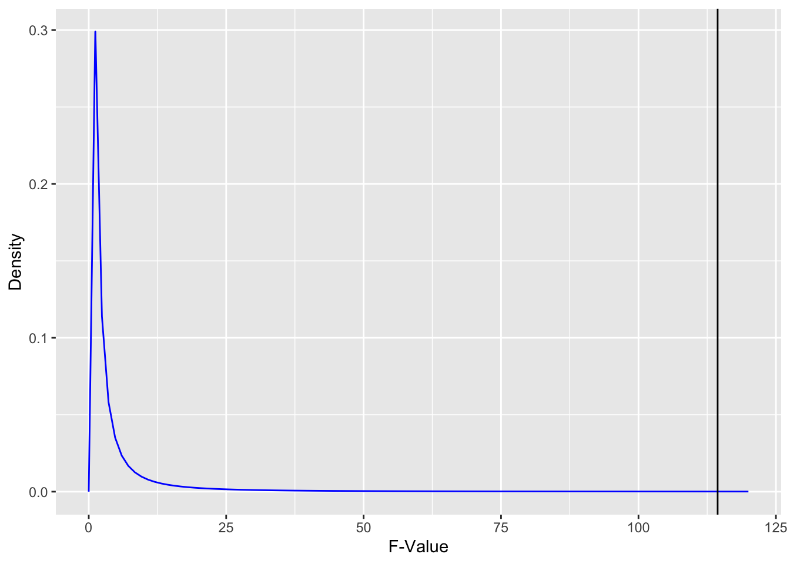
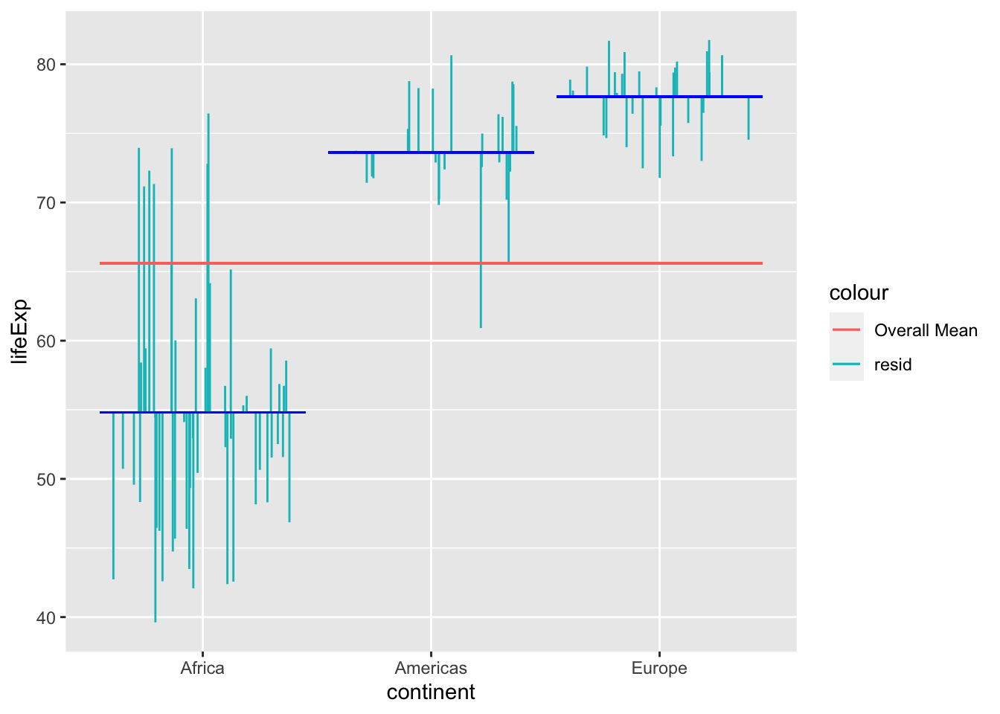

One Way ANOVA (incomplete)
Red means that the page does not exist yet
Orange means that the page is started
The mathematics behind a one-way ANOVA is actually just an extension of the GLM approach to independent samples t-tests. To illustrate this, we will investigate if there are significant differences in life expectancy between Africa, the Americas and Europe using gapminder data. Let’s first focus on the relevant contents in this dataset and then capture the sum of squares around the mean (i.e. the total sum of squares):
library(gapminder)
gapminder_2007 <- subset(
gapminder, # the data set
year == 2007
)
## Automatic calculation
gapminder_3_continents <- subset(
gapminder_2007,
continent == "Europe" | continent == "Americas" | continent == "Africa"
)Before we start, lets visualise the three types of variance/sum of squares we will want to capture for our ANOVAs: Total, Between Subject and Error.
Total
In ANOVAs we are trying to explain variance around the mean. The total variance around the mean can be visualised as follows:
library(ggplot2)
gapminder_3_continents$lifeExpMean = mean(gapminder_3_continents$lifeExp)
gapminder_3_continents$continent_mean = mean(gapminder_3_continents$lifeExp)
ggplot(gapminder_3_continents, aes(x = continent, y = lifeExp)) +
geom_segment(
position = "jitter",
#arrow = arrow(length = unit(0.01, "npc"),ends = "first"),
aes(
xend = continent,
yend = lifeExpMean,
color = "resid"
)
) +
geom_segment(
aes(
x = 0.55,
xend = 3.45,
y = lifeExpMean,
yend = lifeExpMean
),
color = "blue"
)
The sum of squares is the sum of the square of all of these residuals, to give you the total sum of squares.
Between
The variance for Between is the variance that is explained by each group. In this case it’s the difference between the grand mean and each group’s mean:
lm_3_continents <- summary(lm(lifeExp ~ factor(continent), data = gapminder_3_continents))
# lm_3_continents$coefficients
# mean(gapminder_3_continents$lifeExp[gapminder_3_continents$continent=="Europe"])
gapminder_3_continents$continent_mean = lm_3_continents$coefficients[1,1] # intercept, which is mean for Africa as there are only "Americas" and "Europe" factors.
gapminder_3_continents$continent_mean[gapminder_3_continents$continent == "Americas"] = gapminder_3_continents$continent_mean[gapminder_3_continents$continent == "Americas"] + lm_3_continents$coefficients[2,1]
gapminder_3_continents$continent_mean[gapminder_3_continents$continent == "Europe"] = gapminder_3_continents$continent_mean[gapminder_3_continents$continent == "Europe"] + lm_3_continents$coefficients[3,1]
ggplot(gapminder_3_continents, aes(x = continent, y = continent_mean)) +
geom_segment(
#position = "jitter",
position = position_jitter(height=0),
#arrow = arrow(length = unit(0.01, "npc"),ends = "first"),
aes(
xend = continent,
yend = lifeExpMean,
color = "Between Var"
)
) +
geom_segment(
aes(
x = 0.55,
xend = 3.45,
y = lifeExpMean,
yend = lifeExpMean
),
color = "blue"
) +
ylab("Life Expectancy")
The sum of squares for between is the sum of the square of these variances.
Error
Variance that is not explained by the model (in this case the between subjects factor) is the error. In this case, it’s the residuals around the means for each continent:
ggplot(gapminder_3_continents, aes(x = continent, y = lifeExp)) +
geom_segment(
position = "jitter",
#arrow = arrow(length = unit(0.01, "npc"),ends = "first"),
aes(
xend = continent,
yend = continent_mean,
color = "resid"
)
) +
geom_segment(aes(
x = 0.55,
xend = 1.45,
y = lm_3_continents$coefficients[1,1],
yend = lm_3_continents$coefficients[1,1]),
color = "blue"
) +
geom_segment(aes(
x = 1.55,
xend = 2.45,
y = lm_3_continents$coefficients[2,1] + lm_3_continents$coefficients[1,1],
yend = lm_3_continents$coefficients[2,1] + lm_3_continents$coefficients[1,1]),
color = "blue"
) +
geom_segment(aes(
x = 2.55,
xend = 3.45,
y = lm_3_continents$coefficients[3,1] + lm_3_continents$coefficients[1,1],
yend = lm_3_continents$coefficients[3,1] + lm_3_continents$coefficients[1,1]),
color = "blue"
) +
geom_segment(
aes(
x = 0.55,
xend = 3.45,
y = mean(lifeExp),
yend = mean(lifeExp),
color = "Overall Mean"
)
)
The sum square of the error is the sum of the square of these residuals (error).
Now that we’ve visualised the types of variance we address in a one-way ANOVA, lets start discussing how to calculate the variance for each variable.
One Way ANOVA
As highlighted above, ANOVAs aim to calculate what proportion of the total variance around the mean can be explained by your factors. So let’s start by calculating the total sum of squares:
\[ SS_{total} = \sum{(x_i - \mu)^2} \]
total_ss = sum((gapminder_3_continents$lifeExp - mean(gapminder_3_continents$lifeExp))^2)
total_ss[1] 17477.99So 1.7477987^{4} is the all the variance around the mean to be explained. The general linear model we will run is to see how much variance is explained by the mean of each continent. The formula for this is:
\[ SS_{between} = \sum_{group}{(\sum_{item}(\bar{x}_{group} - \mu)^2}) \]
Or, applied to our current data:
\[ SS_{between} = \sum_{continent}{(\sum_{country}(\bar{x}_{continent} - \mu)^2)} \]
\(\mu\) represents the mean across all countries
\(\bar{x}_{group}\) represents the mean of the group
Similarly, \(\bar{x}_{continent}\) is the mean across all countries in a continent
In English, for each country the model predicts that the value will be the mean life expectancy in its continent. So for Algeria, Angola and Botswana, the model predicts that the life expectancy will be 54.8060385. To capture all the variance that this model captures, we need to compare the predicted values to the group mean. We square these differences to make all the numbers positive so that when we sum then we don’t get (close to) zero after all the values above the mean balance out those below the mean. In terms of how this looks manually in R:
## Manual calculation
ss_between = (
# SS for mean of Europe compared to the grand mean across all countries
((mean(gapminder_3_continents$lifeExp[gapminder_3_continents$continent=="Europe"])-mean(gapminder_3_continents$lifeExp))^2) * sum(gapminder_3_continents$continent=="Europe") +
# SS for mean of Americas compared to the grand mean across all countries
((mean(gapminder_3_continents$lifeExp[gapminder_3_continents$continent=="Americas"])-mean(gapminder_3_continents$lifeExp))^2) * sum(gapminder_3_continents$continent=="Americas") +
# SS for mean of Africa compared to the grand mean across all countries
((mean(gapminder_3_continents$lifeExp[gapminder_3_continents$continent=="Africa"])-mean(gapminder_3_continents$lifeExp))^2) * sum(gapminder_3_continents$continent=="Africa")
)
ss_between[1] 12016.81So, let’s just confirm that our manual calculation is the same as what a package will give us:
summary(aov(lifeExp ~ factor(continent), data = gapminder_3_continents))[[1]][["Sum Sq"]][1][1] 12016.81Looks good. Let’s confirm what the effect size for this is next.
\(R^2\) and \(R^2_{adj}\)
The variance explained by the model is the \(R^2\) value, which is:
\[ R^2 = \frac{SS_{between}}{SS_{total}} \]
If we manually calculate it we get:
ss_between/total_ss[1] 0.6875397Let’s double check this with a function based calculation:
summary(lm(lifeExp ~ factor(continent), data = gapminder_3_continents))
Call:
lm(formula = lifeExp ~ factor(continent), data = gapminder_3_continents)
Residuals:
Min 1Q Median 3Q Max
-15.193 -3.934 -0.339 3.121 21.636
Coefficients:
Estimate Std. Error t value Pr(>|t|)
(Intercept) 54.806 1.005 54.54 <2e-16 ***
factor(continent)Americas 18.802 1.764 10.66 <2e-16 ***
factor(continent)Europe 22.843 1.661 13.75 <2e-16 ***
---
Signif. codes: 0 '***' 0.001 '**' 0.01 '*' 0.05 '.' 0.1 ' ' 1
Residual standard error: 7.246 on 104 degrees of freedom
Multiple R-squared: 0.6875, Adjusted R-squared: 0.6815
F-statistic: 114.4 on 2 and 104 DF, p-value: < 2.2e-16Lovely. You may have noticed that there is also an adjusted R-Squared reported. There is a concern that an unadjusted R-Squared doesn’t take into account inflation in effect size calculations that happens in samples compared to populations (see degrees of freedom for an explanation of this). To apply degrees of freedom to address this bias, we actually need to reconceptualise the previous formula to focus on the unexplained variance (i.e. error):
\[ SS_{between} = SS_{total}-SS_{error} \]
This means that we can reconstruct the above formula:
\[ R^2 = \frac{SS_{between}}{SS_{total}} = \frac{SS_{total}-SS_{error}}{SS_{total}} = 1 - \frac{SS_{error}}{SS_{total}} \]
This is helpful because we need to adjust our calculation to increase the weighting of error to counterbalance bias. We do this by applying degrees of freedom to both \(SS_{error}\) and \(SS_{total}\) , but the adjustment will result in new value for error being proportionately higher than for total:
\[ R^2_{adj} = 1 - \frac{SS_{error}/df_{error}}{SS_{total}/df_{total}} \]
\[ df_{error} = N - 1 - (levels-1) \]
\[ df_{total} = N-1 \]
In fact, the above includes the Mean Square Error (MSE) and the Mean Square Total (MST)
\[ MSE = \frac{SS_{error}}{df_{error}} = \frac{SS_{error}}{N-1-(levels-1)} \]
\[ MST = \frac{SS_{total}}{df_{total}} = \frac{SS_{total}}{N-1} \]
So another way you can think of this is:
\[ R^2_{adj} = 1 - \frac{SS_{error}/df_{error}}{SS_{total}/df_{total}} = \frac{MSE}{MST} \]
Let’s see what we get when we calculate this manually
error_ss = total_ss-ss_between
mse = error_ss/(
dim(gapminder_3_continents)[1] - # N
(3-1) - # levels - 1
1
)
mst = total_ss/(
dim(gapminder_3_continents)[1] - # N
1
)
1-(mse/mst)[1] 0.6815309Let’s check if this value the same as you get when using a function:
this_summary = summary(lm(lifeExp ~ factor(continent), data = gapminder_3_continents))
this_summary$adj.r.squared[1] 0.6815309Eta-Squared (\(\eta^2\))
Eta-squared ( \(\eta^2\) ) is actually the same as \(R^2\), but is the terminology associated with ANOVAs rather than linear models. Let’s confirm with a function:
lsr::etaSquared(lm(lifeExp ~ factor(continent), data = gapminder_3_continents)) eta.sq eta.sq.part
factor(continent) 0.6875397 0.6875397P-value calculation
To calculate the p-value we need to calculate the F-value and then compare it to an f-distribution. The F-value is basically the sum of squares of what can be explained divided by the sum of squares of what cannot be explained, when controlling for degrees of freedom:
\[ F = \frac{SS_{between}/df_{between}}{SS_{error}/df_{error}} \]
\[ df_{between} = (levels - 1) \]
\[ df_{error} = (N - (levels-1) - 1) \]
In our case, this is:
(ss_between/2)/(error_ss/(107 - (3-1) - 1))[1] 114.4212Let’s confirm using a function
this_summary = summary(aov(lifeExp ~ factor(continent), data = gapminder_3_continents))
this_summary[[1]][["F value"]][1][1] 114.4212How significant is this? Let’s draw our F-distribution
ggplot(data.frame(x = c(0, 120)), aes(x)) +
# stat_function(fun = df, args =list(df1 =5, df2=1), xlim = c(2,4), geom = "area") +
stat_function(fun = df, args =list(df1 =104, df2=2), color = "blue") +
geom_vline(xintercept = 114.4) +
# stat_function(fun = df, args =list(df1 =100, df2=2), color = "red") +
# stat_function(fun = df, args =list(df1 =100, df2=3), color = "green") +
# annotate("label", x = 2, y = .4, label = "df1 = 100, df2=1", colour="blue") +
# annotate("label", x = 2, y = .35, label = "df1 = 100, df2=2", colour="red") +
# annotate("label", x = 2, y = .3, label = "df1 = 100, df2=3", colour="green") +
xlab("F-Value") +
ylab("Density")
As we can see above, there is almost nothing under the curve (it’s imperceptible) for F of 114.4 and above. That means that the p-value will be tiny to reflect this very minimal area under the curve. Let’s check:
this_summary[[1]][["Pr(>F)"]][1][1] 5.362027e-27That looks a fair representation of the proportion of area under the curve is greater than 114.4.
GLM approach
ANOVAs and regressions are general linear models that often achieve the same broad statistical goals but framed in different ways. You could also investigate the main effect of continent by dummy coding the continents and running a multiple regression with these dummy codes as predictors, and life expectancy as the outcome:
summary(lm(lifeExp ~ factor(continent), gapminder_3_continents))
Call:
lm(formula = lifeExp ~ factor(continent), data = gapminder_3_continents)
Residuals:
Min 1Q Median 3Q Max
-15.193 -3.934 -0.339 3.121 21.636
Coefficients:
Estimate Std. Error t value Pr(>|t|)
(Intercept) 54.806 1.005 54.54 <2e-16 ***
factor(continent)Americas 18.802 1.764 10.66 <2e-16 ***
factor(continent)Europe 22.843 1.661 13.75 <2e-16 ***
---
Signif. codes: 0 '***' 0.001 '**' 0.01 '*' 0.05 '.' 0.1 ' ' 1
Residual standard error: 7.246 on 104 degrees of freedom
Multiple R-squared: 0.6875, Adjusted R-squared: 0.6815
F-statistic: 114.4 on 2 and 104 DF, p-value: < 2.2e-16We can see that R has automatically dummy coded the data so that Americas and Europe are dummy variables (and Africa is the baseline/default continent). The F-value output is the same (114.4)
note that advantages of an ANOVA approach compared to GLM (or vice-versa)
Nico - can you please relocate below and complete gaps I’ve created above?
gapminder_3_continents['continent'] = gapminder_3_continents['continent'].astype('category')
model3 = ols('lifeExp ~ continent', data = gapminder_3_continents).fit()
aov_table3 = sm.stats.anova_lm(model3, typ=2)
aov_table3
ss_between = (gapminder_3_continents['lifeExp'][gapminder_3_continents['continent']=="Europe"].mean() - gapminder_3_continents['lifeExp'].mean())**2 * sum(gapminder_3_continents['continent']=="Europe")+(gapminder_3_continents['lifeExp'][gapminder_3_continents['continent']=="Americas"].mean() - gapminder_3_continents['lifeExp'].mean())**2 * sum(gapminder_3_continents['continent']=="Americas")+(gapminder_3_continents['lifeExp'][gapminder_3_continents['continent']=="Africa"].mean() - gapminder_3_continents['lifeExp'].mean())**2 * sum(gapminder_3_continents['continent']=="Africa")
totalSS = sum((gapminder_3_continents['lifeExp'] - gapminder_3_continents['lifeExp'].mean())**2)
within1_all=(gapminder_3_continents['lifeExp'][gapminder_3_continents['continent']=="Europe"]-gapminder_3_continents['lifeExp'][gapminder_3_continents['continent']=="Europe"].mean())**2
within1= sum(within1_all)
within2_all=(gapminder_3_continents['lifeExp'][gapminder_3_continents['continent']=="Americas"]-gapminder_3_continents['lifeExp'][gapminder_3_continents['continent']=="Americas"].mean())**2
within2= sum(within2_all)
within3_all=(gapminder_3_continents['lifeExp'][gapminder_3_continents['continent']=="Africa"]-gapminder_3_continents['lifeExp'][gapminder_3_continents['continent']=="Africa"].mean())**2
within3= sum(within3_all)
ss_within_long = within1 + within2 + within3
(ss_between/2)/(ss_within_long/(len(gapminder_3_continents['lifeExp'])-3))114.42116407168957To visualise this
library(ggplot2)
lm_3_continents <- summary(lm(lifeExp ~ factor(continent), data = gapminder_3_continents))
lm_3_continents$coefficients Estimate Std. Error t value Pr(>|t|)
(Intercept) 54.80604 1.004904 54.53856 2.466786e-78
factor(continent)Americas 18.80208 1.763600 10.66119 2.243512e-18
factor(continent)Europe 22.84256 1.661388 13.74908 3.900175e-25mean(gapminder_3_continents$lifeExp[gapminder_3_continents$continent=="Europe"])[1] 77.6486gapminder_3_continents$continent_mean = lm_3_continents$coefficients[1,1] # intercept, which is mean for Africa as there are only "Americas" and "Europe" factors.
gapminder_3_continents$continent_mean[gapminder_3_continents$continent == "Americas"] = gapminder_3_continents$continent_mean[gapminder_3_continents$continent == "Americas"] + lm_3_continents$coefficients[2,1]
gapminder_3_continents$continent_mean[gapminder_3_continents$continent == "Europe"] = gapminder_3_continents$continent_mean[gapminder_3_continents$continent == "Europe"] + lm_3_continents$coefficients[3,1]
ggplot(gapminder_3_continents, aes(x = continent, y = lifeExp)) +
geom_segment(
position = "jitter",
#arrow = arrow(length = unit(0.01, "npc"),ends = "first"),
aes(
xend = continent,
yend = continent_mean,
color = "resid"
)
) +
geom_segment(aes(
x = 0.55,
xend = 1.45,
y = lm_3_continents$coefficients[1,1],
yend = lm_3_continents$coefficients[1,1]),
color = "blue"
) +
geom_segment(aes(
x = 1.55,
xend = 2.45,
y = lm_3_continents$coefficients[2,1] + lm_3_continents$coefficients[1,1],
yend = lm_3_continents$coefficients[2,1] + lm_3_continents$coefficients[1,1]),
color = "blue"
) +
geom_segment(aes(
x = 2.55,
xend = 3.45,
y = lm_3_continents$coefficients[3,1] + lm_3_continents$coefficients[1,1],
yend = lm_3_continents$coefficients[3,1] + lm_3_continents$coefficients[1,1]),
color = "blue"
) +
geom_segment(
aes(
x = 0.55,
xend = 3.45,
y = mean(gapminder_3_continents$lifeExp),
yend = mean(gapminder_3_continents$lifeExp),
color = "Overall Mean"
)
)Warning: Use of `gapminder_3_continents$lifeExp` is discouraged.
ℹ Use `lifeExp` instead.
Use of `gapminder_3_continents$lifeExp` is discouraged.
ℹ Use `lifeExp` instead.
import seaborn as sns
spec = dict(x="continent", y="lifeExp", data=gapminder_3_continents)
fig, ax = plt.subplots(figsize =(7, 5))
sns.stripplot(**spec, size=4, palette="deep")
sns.pointplot(**spec, join=False, ci=0, capsize=.7, scale=0, palette="deep")
plt.axhline(y=gapminder_3_continents["lifeExp"].mean(), color='red', ls='-')
plt.show()Fig. XXX. Our model in the figure above considers the distance from each of the continent’s mean to the overall mean as part of the explained variance. For each data point, the squared distance from the the mean line to the overall mean line is part of the sum of squares at the top of the formula.